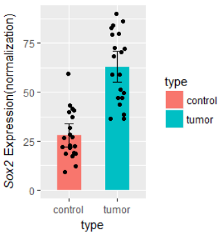
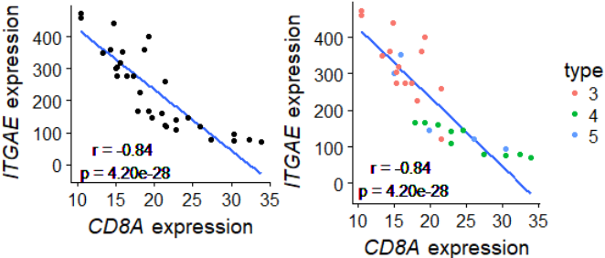
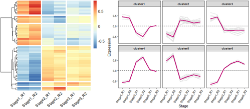
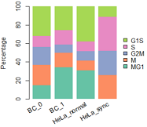

Tips: 看不清请刷新，换个颜色再看。 1. 比较干净的背景: +theme_bw(); 最干净的背景: +theme_classic() 2. 参数的解释: 生物慕课网

#############################
library(ggplot2)
library(reshape2)
#示例数据：某基因在对照和肿瘤样本中的表达量。
d1=data.frame(
control=c(10,20,30,40,30,60,20,40,20,20,10,20,30,40,30,40,20,40,20,20),
tumor=c(50,70,40,60,80,90,40,50,70,80,50,70,40,60,80,90,40,50,70,80)
);
# 数据框重塑，数据合并为一列，添加分类列
d2=melt(d1,
variable.name="type",#新变量的名字
value.name="value" #值得名字
);
d2
######## 开始画图1 箱线图 + 散点图 done
ggplot(d2,aes(factor(type), value))+
geom_boxplot()+
geom_jitter()
######## 开始画图2 带误差bar的柱状图 + 散点图 done
#http://www.cookbook-r.com/Manipulating_data/Summarizing_data/
## Summarizes data.
## Gives count, mean, standard deviation, standard error of the mean, and confidence interval (default 95%).
## data: a data frame.
## measurevar: the name of a column that contains the variable to be summariezed
## groupvars: a vector containing names of columns that contain grouping variables
## na.rm: a boolean that indicates whether to ignore NA's
## conf.interval: the percent range of the confidence interval (default is 95%)
summarySE = function(data=NULL, measurevar, groupvars=NULL, na.rm=FALSE,
conf.interval=.95, .drop=TRUE) {
library(plyr)
# New version of length which can handle NA's: if na.rm==T, don't count them
length2 = function (x, na.rm=FALSE) {
if (na.rm) sum(!is.na(x))
else length(x)
}
# This does the summary. For each group's data frame, return a vector with
# N, mean, and sd
datac = ddply(data, groupvars, .drop=.drop,
.fun = function(xx, col) {
c(N = length2(xx[[col]], na.rm=na.rm),
mean = mean (xx[[col]], na.rm=na.rm),
sd = sd (xx[[col]], na.rm=na.rm)
)
},
measurevar
)
# Rename the "mean" column
datac = rename(datac, c("mean" = measurevar))
datac$se = datac$sd / sqrt(datac$N) # Calculate standard error of the mean
# Confidence interval multiplier for standard error
# Calculate t-statistic for confidence interval:
# e.g., if conf.interval is .95, use .975 (above/below), and use df=N-1
ciMult = qt(conf.interval/2 + .5, datac$N-1)
datac$ci = datac$se * ciMult
return(datac)
}
# http://www.cookbook-r.com/Graphs/Plotting_means_and_error_bars_(ggplot2)/
d3 = summarySE(d2, measurevar="value", groupvars=c("type"))
d3
ggplot(d3, aes(x=type, y=value)) +
geom_bar(aes(fill=type),position=position_dodge(), stat="identity", width=0.5) +
geom_errorbar(aes(ymin=value-ci, ymax=value+ci),
width=.2, # Width of the error bars
position=position_dodge(.9))+
geom_jitter(data=d2,aes(type,value), width=0.15) +
ylab( expression(paste( italic("Sox2")," Expression(normalization)") ) )
#ylab("Sox2 Expression\n(normalization)")

#怎么处理线性拟合r和p值
#1.1造数据
#x=data.frame(
# a=c(1,2,3,4,5),
# b=c(1,2,4,5,6)
#)
#1.2 抽样生成数据
library(dplyr)
set.seed(1)
sdata=sample_n(mtcars,100,replace=T)
x=data.frame(
a=sdata$mpg,
b=sdata$disp,
clazz=sdata$gear #分类变量
)
#方法1：用包计算r和p
#library(Hmisc)
#rs=rcorr(x$a,x$b, type="pearson")
#rs;str(rs)
#r=rs$r[2];r #[1] -0.8427099
#p=rs$P[2];p #[1] 0
#r0=round(r,2);r0 #[1] -0.84
#
#方法2：基础统计命令，计算r和p
#cor(x$a,x$b) #[1] -0.8427099
ts=cor.test(x$a,x$b); ts
str(ts)
p=ts$p.value;p #[1] 4.202888e-28
r=ts$estimate[['cor']];r#[1] -0.8427099
r0=round(r,2);r0
# 保留两位有效数字
#https://stackoverflow.com/questions/39623636/forcing-r-output-to-be-scientific-notation-with-at-most-two-decimals
p0=formatC(p, format = "e", digits = 2)
p0
#可视化结果
#plot(x$a,x$b)
library(ggplot2)
library(cowplot)
g=ggplot(data=x,aes(a,b))+
geom_smooth(method='lm', se=F)+ #se=F不要置信区间的阴影
geom_text(aes(x=16,y=15,label=paste0("r = ",r0,"\n p = ",p0)))+
theme_cowplot() + #除掉主题背景阴影
xlab( expression(paste( italic("CD8A")," expression") ) )+
ylab( expression(paste( italic("ITGAE")," expression") ) )
g+geom_point() #一般图
g+geom_point(aes(color=factor(clazz)))+ #使用分类变量后
scale_color_discrete("type")

# 加载所需的R包
library(ggplot2)
library(pheatmap)
library(reshape2)
# 读取测试数据
Input =("
Stage1_R1 Stage1_R2 Stage2_R1 Stage2_R2 Stage3_R1 Stage3_R2
Unigene0001 -1.1777172 -1.036102 0.8423829 1.3458754 0.1080678 -0.08250721
Unigene0002 1.0596877 1.490939 -0.7663244 -0.6255567 -0.5333080 -0.62543728
Unigene0003 0.9206594 1.575844 -0.7861697 -0.3860003 -0.5501094 -0.77422398
Unigene0004 -1.3553173 -1.145970 0.2097526 0.7059886 0.9516353 0.63391053
Unigene0005 1.0134516 1.445897 -0.9705129 -0.8560422 -0.2556562 -0.37713783
Unigene0006 0.8675939 1.575735 -1.0120718 -0.5856459 -0.2821991 -0.56341216
")
data = read.table(textConnection(Input), header=TRUE,row.names=1)
##
#因为数据少，所以随便倍增一些数据。真实数据请跳过这一步
data=rbind(data,data*0.8) #造数据
data=rbind(data*0.9,data*(-0.8) ) #造数据
data=rbind(data*(-0.4),data*0.6) #造数据
row.names(data)=paste0('Unigene000',seq(1:nrow(data)) )#造数据
#end
#
#data = read.table("test.txt",header = T, row.names = 1,check.names = F)
# 查看数据基本信息
head(data)#View(data)
# 使用pheatmap绘制基因表达热图，并进行层次聚类分成不同的cluster
p = pheatmap(data, border=F, #不要描边
show_rownames = F, #不显示基因名
#cellwidth =40, #设置宽度
#scale ='row', #对每一行z标准化
cutree_rows = 6, #对row聚类时，设置加几个白横分割线
cluster_cols = F, #不对列聚类
gaps_col = c(2,4,6), #对列分割，仅用于不对列聚类的时候
angle_col = 45, #底部的字旋转的方向
fontsize = 12)
# 获取聚类后的基因顺序
row_cluster = cutree(p$tree_row,k=6)
# 对聚类后的数据进行重新排序
newOrder = data[p$tree_row$order,]
newOrder[,ncol(newOrder)+1]= row_cluster[match(rownames(newOrder),names(row_cluster))]
colnames(newOrder)[ncol(newOrder)]="Cluster"
# 查看重新排序后的数据
head(newOrder)
# 查看聚类后cluster的基本信息
unique(newOrder$Cluster)
#[1] 5 1 3 2 6 4
#统计每个cluster几个基因
table(newOrder$Cluster)
#1 2 3 4 5 6
#4 20 12 2 8 2
#
# 将新排序后的数据保存输出
newOrder$Cluster = paste0("cluster",newOrder$Cluster)
#write.table(newOrder, "expr_DE.pheatmap.cluster.txt",sep="\t",quote = F,row.names = T,col.names = T)
#
# 绘制每个cluster的基因聚类趋势图
newOrder$gene = rownames(newOrder)
head(newOrder)
# Stage1_R1 Stage1_R2 Stage2_R1 Stage2_R2 Stage3_R1 Stage3_R2 Cluster gene
#Unigene00032 0.4577851 0.6440856 -0.3310521 -0.2702405 -0.2303891 -0.2701889 cluster5 Unigene00032
#Unigene00033 0.3977249 0.6807646 -0.3396253 -0.1667521 -0.2376473 -0.3344648 cluster5 Unigene00033
#
#
library(reshape2)
# 将短数据格式转换为长数据格式
data_new = melt(newOrder)
head(data_new)
# Cluster gene variable value
#1 cluster5 Unigene00032 Stage1_R1 0.4577851
#2 cluster5 Unigene00033 Stage1_R1 0.3977249
# 绘制基因表达趋势折线图
ggplot(data_new,aes(variable, value, group=gene)) + geom_line(color="gray90",size=0.8) +
geom_hline(yintercept =0,linetype=2) +
stat_summary(aes(group=1),fun.y=mean, geom="line", size=1.2, color="#c51b7d") +
facet_wrap(Cluster~.) +
labs(x="Stage", y='Expression')+
theme_bw() +
theme(panel.grid.major = element_blank(), panel.grid.minor = element_blank(),
axis.text = element_text(size=8, face = "bold"),
axis.text.x=element_text(angle=60, hjust=1), #x标签旋转60度
strip.text = element_text(size = 8, face = "bold"))
#

##data: 每群细胞中，各周期细胞数
mydatatxt="
G1S S G2M M MG1
BC_0 28 10 17 19 13
BC_1 21 13 7 13 28
HeLa_normal 11 3 3 3 9
HeLa_sync 3 10 7 7 0
"
#从字符串中读取数据框
tbl1=read.table(text=mydatatxt, header=T) # text设置了，file就要留空
tbl1=tbl1[,c(5,4,3,2,1)] #reorder columns
tbl1
#percentage
tbl2=apply(tbl1,1,function(x){ 100*x/sum(x)})
cellNames=colnames(tbl2)
colnames(tbl2)=NULL
tbl2
#画条状图
library(RColorBrewer)
col=RColorBrewer::brewer.pal(n = 5,name = "Set2");
col=rev(col)
barplot(1:5,col=col)
#plot
par(mar=c(5, 4, 4, 5) + 0.1)
posX=barplot(as.matrix(tbl2), col=col,
#names.arg=(paste(substr(FirstName,1,1),".",LastName)), #设定横坐标名称
names.arg=NULL,
space=0.2, #条形间距
#xlab="Individual #",
ylab="Percentage",
legend.text = rownames(tbl2),
args.legend=list(x="right", #border=NA, #不要图例小方块描边
box.col="white", inset=-0.25,bty="n"),
border=NA)
#加底部x坐标标签
y = -0.05;
text(posX, -5, labels=cellNames, adj=1, srt=30, xpd=TRUE) #adj标签与轴的距离，srt设置xlable角度
#box()
数据特点：范围是0-1，但是0.5以下很稀疏，峰值在0.8-0.9之间，1也是一个峰。
由于颜色变量偏斜太厉害，直接使用ggplot2，渐变色只能指定3种颜色，偏斜导致整体颜色太淡。
目前不会使用ggplot2设置4种颜色的渐变色，只好手动用R原生函数绘制了。
head(dif)
# gene cellNumber meanDPAU sdDPAU RNACounts cpm totalCell domCell nonDomCell ratio
#RPL8 RPL8 225 99.86553 0.3462266 712259 492539.3 225 225 0 1.0000000
#RPL3 RPL3 225 99.73653 0.9470744 542531 369992.2 225 223 2 0.9911111
#...
#fig1: 查看分布图，略。
hist(dif$ratio, n=200)
abline(v=0.9, col='red', lty=2)
#
#fig2: 略。(点的颜色普遍太淡)
library(ggplot2)
ggplot(dif, aes(meanDPAU, sdDPAU, color=ratio))+
geom_point(size=0.2)+
scale_color_gradient2('xx\nRatio', low="navy", mid='white', high="red", midpoint =0.7)+
theme_bw()
#fig3: 见上图
# step0: 设置颜色。色彩向量取值范围是0-1，但是数据偏斜向1。0.5以下很稀疏。
bk0=seq(0.0,0.39,by=0.01) #almost non data
bk1=seq(0.4,0.59,by=0.01)
bk2=seq(0.6,0.79,by=0.01)
bk3=seq(0.8,1,by=0.01)
#
colors = c(
colorRampPalette(colors = c("navy","blue"))(length(bk0)),
colorRampPalette(colors = c("blue","#00BFFF"))(length(bk1)),
colorRampPalette(colors = c("#00BFFF","#FFE9E9"))(length(bk2)),
colorRampPalette(colors = c("#FFE9E9","red"))(length(bk3))
)
print( length( seq(0,1,0.01) ) )
print( length(colors) )
#
library(Cairo)
dev.off() #for jupyter bug
CairoPDF('6_9_domi__testing__.pdf', width=4.5,height=4)
#页面布局
mat = matrix(c(1,1,1,1,1,1,2,2), nrow=1, byrow=TRUE);
layout(mat)
############
#step1: plot
par(mar=c(4.5,4.5,4,0)) #bottom, left, top, right
plot(NULL, xlim=c(0,100), ylim=c(0,55), type='n',
xlab="Mean of xx",
ylab="Standard deviation of xx",
main="Colored by xx ratio")
for(i in 1:nrow(dif)){
v=round(dif$ratio[i],2)*100
color=colors[v]
points(dif[i,'meanDPAU'], dif[i, 'sdDPAU'],
pch=20, cex=0.05, col=color)
}
############
#step2: 用image函数画color bar
par(mar=c(13,2.5,6,5)) #bottom, left, top, right
n=100
image(t(matrix(0:n)),col=colors,
xaxt="n", yaxt="n", cex = 1.5,
mgp=c(0,1,0),
#main="Dominant\ncell ratio",
bty='n',#box type
xlab = "", ylab = ""
)
text(x=0,y=1.1,labels=c("xx\nratio"),xpd=T)
axis(4,at=seq(0,1,by=0.2),
labels=seq(0,1,0.20),
cex.axis=1, #坐标轴刻度字体大小
#col.axis="red", #坐标轴刻度字体颜色
#col="purple", #坐标轴颜色
lwd=1, #坐标轴刻度粗细
las=0)#las=0垂直于轴，2平行于轴
#
dev.off()
组合: 顶部barplot，底下百分数barplot，共用x坐标轴，所以要一一对应。
library(Cairo)
# make data
dt0=diamonds[1:1000,]
head(dt0)
dt1=table(dt0$cut, dt0$color)
dt1
CairoPDF('barplot_combine.pdf', width=4,height=4) #要在布局代码之前保存
#页面布局
mat = matrix(c(1,1,2,2,2,2), ncol=1, byrow=T);mat
layout(mat)
### fig1 barplot
dt.rsum=apply(dt1, 1, sum)
dt.rsum
par(mar=c(1,4,4,6)+ 0.1) #bottom, left, top, right
barplot(as.numeric(dt.rsum), ylab="number",
names.arg=NULL,border=NA,space=0.2)
#### fig2 percentage barplot
tbl2=apply(dt1,1,function(x){ 100*x/sum(x)})
cellNames=colnames(tbl2)
colnames(tbl2)=NULL
tbl2
#画条状图
library(RColorBrewer)
col=RColorBrewer::brewer.pal(n = nrow(tbl2),name = "Set2");
col=rev(col)
#barplot(1:5,col=col)
#plot
par(mar=c(5, 4, 0, 6) + 0.1) ##bottom, left, top, right
posX2=barplot(as.matrix(tbl2), col=col,
#names.arg=(paste(substr(FirstName,1,1),".",LastName)), #设定横坐标名称
names.arg=NULL,
space=0.2, #条形间距
#xlab="Individual #",
ylab="Percentage",
legend.text = rownames(tbl2),
args.legend=list(x="right", border=NA, #不要图例小方块描边
box.col="black", inset=-0.1,bty="n"),
border=NA)
#加底部x坐标标签
y2 = par('usr')[3]-2;
text(posX2, y2, labels=cellNames, adj=1, srt=30, xpd=TRUE) #adj标签与轴的距离，srt设置xlable角度
#box()
dev.off()
## 绘图区域的大小
# par('usr') #c(x1, x2, y1, y2)
#[1] -0.032 6.232 -1.000 100.000